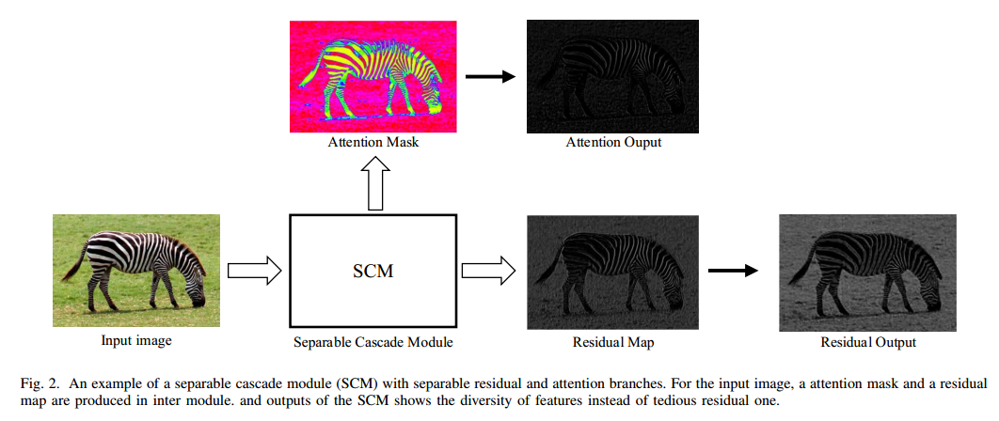
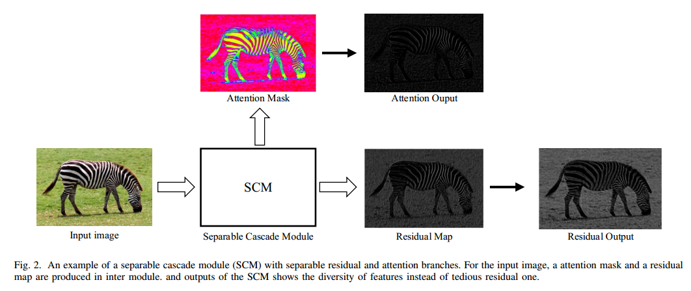

Towards Information Diversity Through Separable Cascade Modules for Image Super Resolution
Zhenxing Huang, Jincai Chen, Ping Lu, Dong Liang, Hairong Zheng, Zhanli Hu
Wuhan National Laboratory for Optoelectronics, Huazhong University of Science and Technology, Wuhan 430074, China
Key Laboratory of Information Storage System (School of Computer Science and Technology, Huazhong University of Science and Technology) Ministry of Education of China, Wuhan 430074, China.
Lauterbur Research Center for Biomedical Imaging, Shenzhen Institutes of Advanced Technology, Chinese Academy of Sciences, Shenzhen 518055, China
Chinese Academy of Sciences Key Laboratory of Health Informatics, Shenzhen 518055, China.

Abstract
Convolution neural network (CNN) has been largely applied to learn the mapping function between low resolution (LR) images and high resolution (HR) ones, which has made great progress in single image super resolution (SISR) domain. With the aid of deep networks through cascading collaborative modules, several works have improved image quality effectively. In these works, the local cascading module is usually treated as an atomic term to extend, which is a convenient way to deepen network structures for both feature extraction and information fusion. However, this would primarily limit the representation of the latter reconstruction layer for its lack of abundant features if the local atomic module could only output one type of information. For instance, the residual block would only contain residual information. In this paper, we propose a separable mechanism in module design for separable multi-streams output to increase the representation capability of deep neural networks. For the sake of diverse features, we obtain two-stream features with four separable modules based on residual learning and attention mechanism. Through sparse cascade structure, it ultimately combines low-level features with high-level ones from convolution layers. Similar to residual-inresidual (RIR) structure, we propose an attention-in-attention (AIA) framework to deepen our networks. Experimental results demonstrate the superiority of our method on several images datasets.
Visual quality
 
